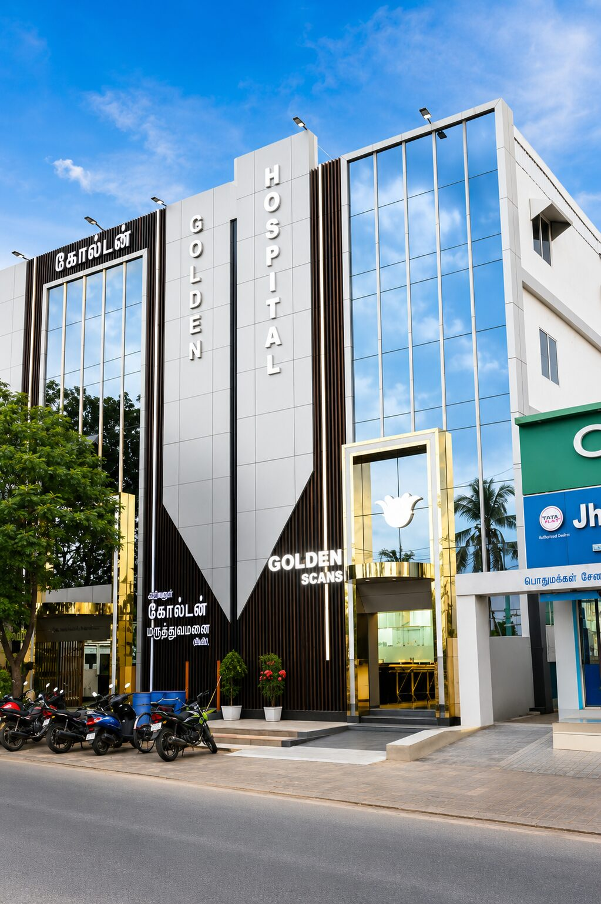

Founder
Dr. T. Kanmani
M.B.B.S., D.Ortho., M.Ch. (Ortho.)
Consultant Orthopaedic Surgeon specialising in fracture and joint care, with more than 25 years of clinical experience.
Emergency care, surgery, critical care and diagnostic services available locally, with referral arranged when required.
Ariyalur Golden Hospital (PVT) Ltd. provides emergency care, specialist consultations, surgery and diagnostic services. Our team aims to provide timely, respectful and accessible care to patients in Ariyalur and nearby communities.
The accident and emergency department operates 24/7, supported round the clock by an intensive care unit, an in-house blood bank, a dialysis unit, CT imaging and an ambulance service. Emergency patients are assessed and prioritized according to clinical urgency. The hospital has two operation theatres — an orthopaedic theatre with C-Arm support and a general theatre with laparoscopic facility — available 24/7 for emergency surgery. Maternity and obstetric services are available — please contact the hospital to confirm current coverage.
On-site imaging and laboratory services are available, including MRI (1.5 T), CT and digital X-ray. Selected gastrointestinal endoscopy, gynaecological endoscopy and laparoscopic procedures are carried out by clinical indication and appointment. Emergency assessment for poisoning and selected dental, maxillofacial and rehabilitation services may also be available. Contact the diagnostic centre to confirm specific tests and timings, and please confirm any service before travelling.

The doctors whose clinical leadership and commitment to accessible care guide Ariyalur Golden Hospital.
M.B.B.S., D.Ortho., M.Ch. (Ortho.)
Consultant Orthopaedic Surgeon specialising in fracture and joint care, with more than 25 years of clinical experience.
M.S. (General Surgery)
Consultant General Surgeon and Director of Ariyalur Golden Hospital, providing resident surgical care to the community.
Our mission, vision and values guide how we serve patients and families.
To improve access to emergency, surgical and specialist care for people in Ariyalur through respectful, transparent and clinically appropriate services.
To be a dependable regional hospital known for ethical practice, responsive emergency care and compassionate treatment.
We aim to explain care clearly and respectfully, with language support where available.
The Emergency Department operates 24/7, with CT, operating theatres, the blood bank, dialysis and the ICU also available round the clock.
Our team explains charges and assists patients with eligible insurance and government-scheme documentation.
Treatment decisions are guided by clinical assessment, appropriate referral and clear communication.
The hospital was established to improve access to emergency, specialist and diagnostic services within the Ariyalur region. That means a 24/7 Emergency Department, subject to confirmation of current operational coverage; emergency surgical support arranged according to clinical need, staff availability and theatre capacity; and on-site imaging that helps clinicians investigate eligible conditions, with scheduling and report times varying by examination.
The billing team assists patients with documentation for eligible insurance and government schemes. Approval and payment remain with the insurer or scheme authority.
We continue to invest in equipment, in visiting specialist consultants, and in the nursing and paramedical teams who care for the patient throughout the stay.
Availability of individual services should be confirmed with the hospital.
A private multispecialty hospital serving Ariyalur town and the surrounding taluks. See Departments for the clinical areas currently covered.
Operating theatres with C-Arm support, an intensive care unit and an in-house blood bank — all available 24/7. Details are listed on the Facilities page.
MRI 1.5 T, digital X-ray, and 24/7 CT and dialysis services. See Scans & Imaging and Dialysis for what each service covers.
Legal entity: Ariyalur Golden Hospital (PVT) Ltd., Ariyalur, Tamil Nadu. Reception: 04329 222530. Emergency (24/7): 94875 76493.
Emergency services are intended to operate 24/7. Call the emergency line on 94875 76493 before arrival when possible.
MRI, CT, X-ray, ECG, echocardiography and laboratory services may be available on-site. Scheduling and report times vary.
The insurance desk assists with eligible government schemes and private TPAs. Coverage is subject to current empanelment, scheme rules and authorization.
Visiting-specialist consultations are available on scheduled days. Check the current doctor timetable before travelling.
An on-site blood bank operates 24/7, supporting eligible patient-care needs subject to stock, compatibility and regulatory requirements.
Inpatient physiotherapy may begin during admission when clinically appropriate and prescribed by the treating team.